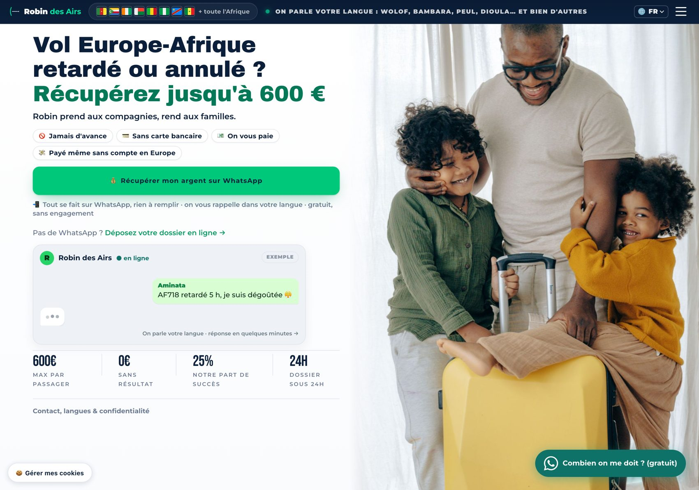
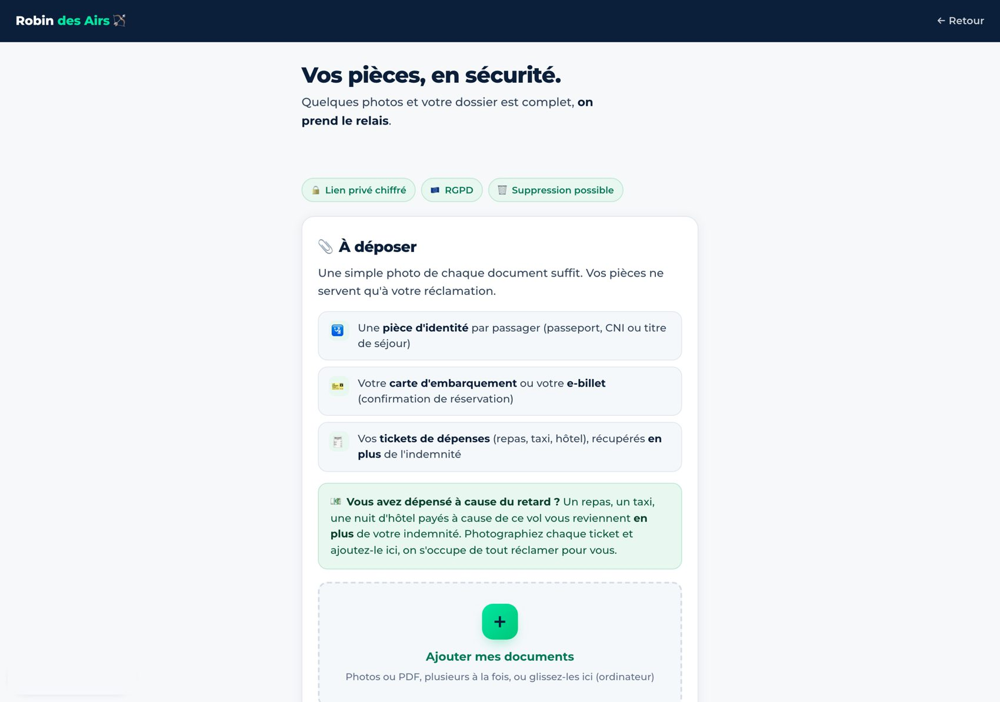
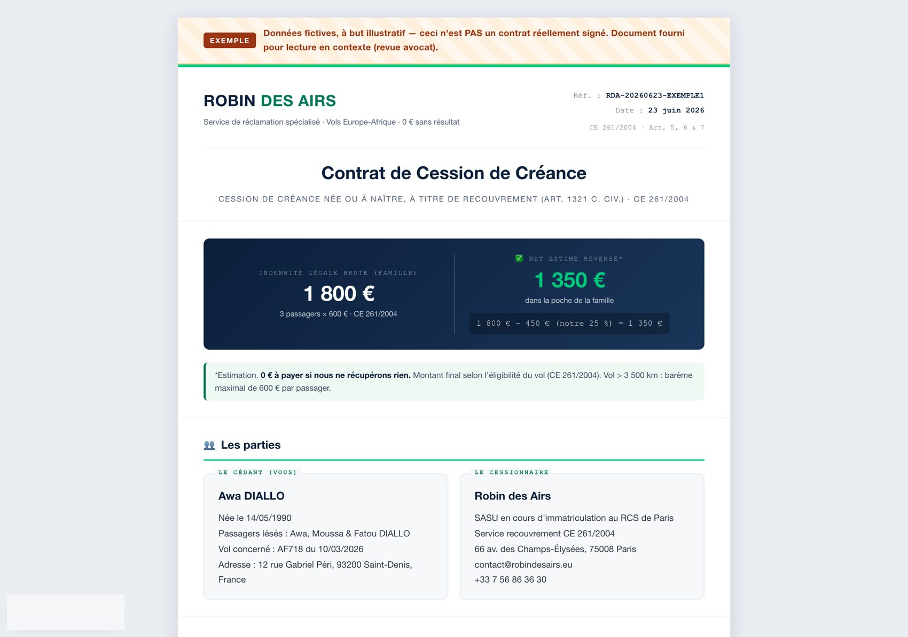

Complément au dossier de financement · Tout ce qui est montré ci-dessous est en ligne et fonctionnel aujourd'hui : rien n'est une maquette. Démonstration en direct possible sur simple appel.

Page d'accueil en production. Le positionnement est immédiat : vols Europe-Afrique, jusqu'à 600 €, jamais d'avance, paiement possible sans compte bancaire européen, accompagnement dans les langues de la diaspora (wolof, bambara, peul, dioula…). Le bouton principal ouvre directement WhatsApp. Site bilingue français/anglais, blog juridique, pages dédiées par ville de départ.
Illustration · données d'exemple
Reconstitution fidèle du parcours réel de l'assistant WhatsApp (messages effectivement en production). Ce que fait l'automate, sans intervention humaine :

Page de dépôt en production (lien personnalisé par client). Une photo de chaque document suffit : identité, carte d'embarquement ou e-billet, tickets de dépenses (remboursés en plus de l'indemnité, art. 9 CE 261). Lien privé chiffré, RGPD, suppression automatique des pièces 30 jours après la clôture.

Spécimen du contrat de cession (données fictives, bandeau « EXEMPLE », document en cours de validation finale par Me Pitcher). Le client voit avant de signer : l'indemnité brute (1 800 €), notre part (450 €) et ce qui revient dans sa poche (1 350 €). Pré-rempli par l'IA à partir des pièces, signé électroniquement (Yousign, eIDAS) depuis le téléphone.
Deux « machines » supplémentaires tournent en production derrière un code d'accès, visibles en démonstration :
Annexe au dossier de financement Robin des Airs · Climbie Kodjo · +33 7 56 86 36 30 · expert@robindesairs.eu · Document confidentiel.